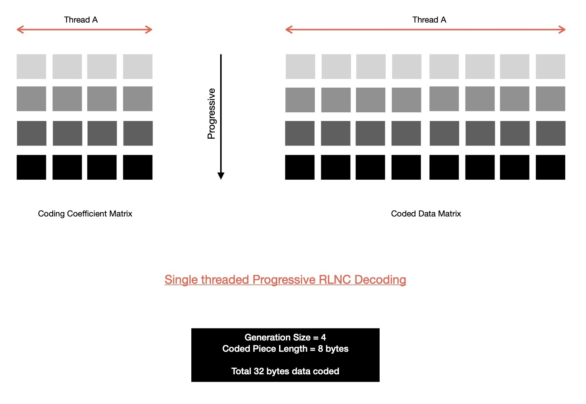
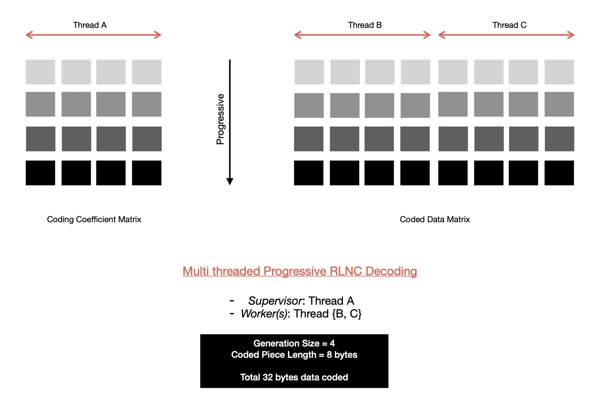
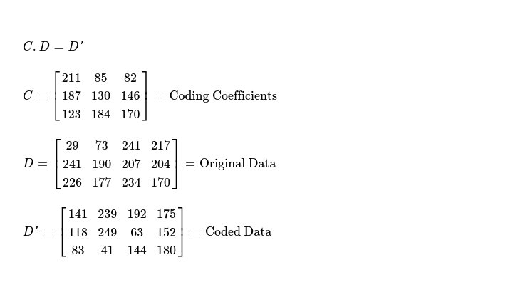
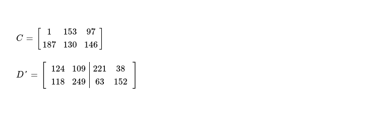
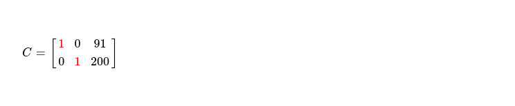
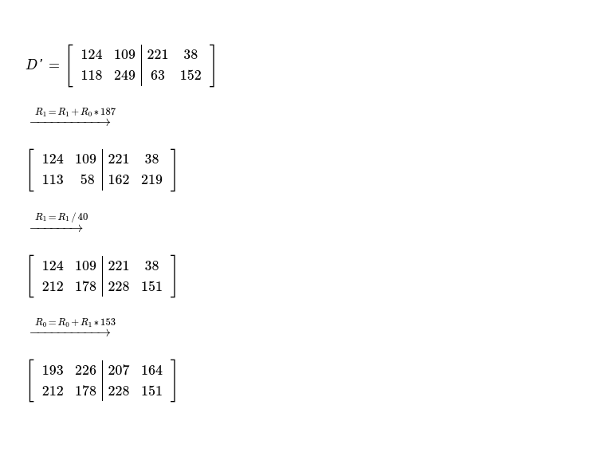
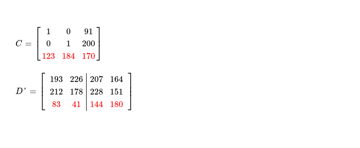
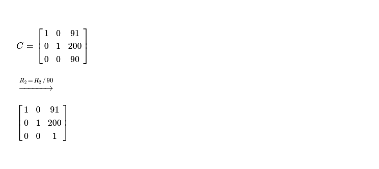
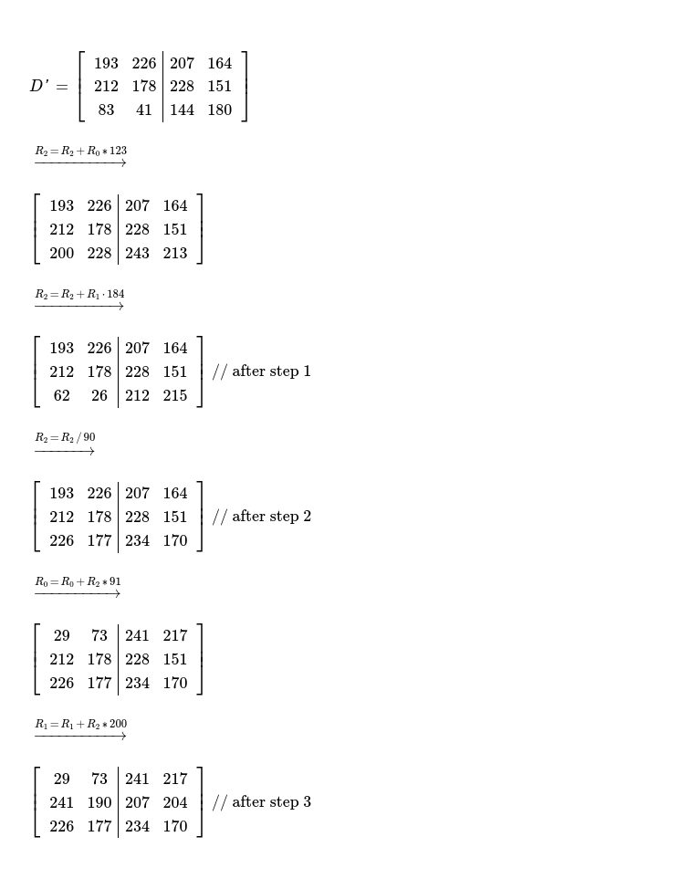

This week I was exploring how parallelism can be incorporated into decoding of Random Linear Network Codes ?
During decoding of RLNC coded pieces it's required to invert one N x N coding coefficient matrix, where N = #-of pieces coded together i.e.
generation size. And matrix inversion is quite expensive O(N ** 3), which is why I'm interested in implementing faster decoding algorithm
in kodr, a RLNC library I've started writing sometime ago. Currently implemented decoding technique
works in progressive mode i.e. as soon as a new coded piece is received, decoder attempts to compute Reduced Row Echelon Form of
updated matrix ( read considering new coded piece ), which keeps pieces partially decoded. When N-th linearly independent piece is received
last iteration of RREF calculation decodes whole data matrix & original pieces are revealed. This scheme works fine, but works in single threaded
mode. So I'm looking for scheme which allows leveraging multiple CPU cores while decoding pieces, which are coded with large generation size
( read N is high ). As soon as generation size goes beyond 64, decoding speed starts to fall down very fast. I've found literatures around
parallelization of RLNC decoding which also works in progressive mode i.e. decoder doesn't need to wait for receiving all of N-many coded pieces
before it can start decoding those pieces.
Today I'll dig deep into Parallel Role Division Progressive Decoding technique, proposed
here, which I'm already implementing
in kodr. You may want to check implementation progress.
In single threaded RLNC decoding implementation, there exists only one thread of execution which accepts newly received coded pieces; places coding vector into coding coefficient matrix & coded data vector into coded data matrix; reduces coefficient matrix into row echelon form, also replicates respective row operations in coded data matrix. This flow of execution is followed by executor thread on reception of every new coded piece. This way prograssively coded pieces get decoded. Finally reception of N-th linearly independent piece reveals all original pieces, N = generation size.
On the other hand, multi threaded variant of RLNC decoding employs more than one thread to work on coding coefficient matrix & coded data matrix. Easy to reason about way of employing > 1 threads of execution, is seperately considering coding coefficient matrix & coded data matrix. Say I create two threads of execution & place responsibility of mutating coding coefficient matrix on thread A, while other one replicates those mutations on coded data matrix portion. As soon as a new coded piece is received, that's inspected by thread A, which primarily figures out whether this piece is linearly dependent with already received pieces or not. If yes, discard piece because it doesn't bring any useful information which can help in decoding. If this piece turns out to be useful one, then thread A proceeds with forward cleaning & backward substitution steps. These steps are communicated to thread B, which replicates respective row operations on whole coded data matrix. So given one communication channel exists between thread A & B, each of them works on two seperate portions of coded piece matrix = coded coefficient matrix + coded data matrix. Actions of thread B are dependent on what thread A decides to do on coding coefficient matrix. But thread A doesn't necessarily need to wait for thread B to replicate respective changes, rather it can proceed with newly received coded pieces & in the mean time thread B performs its pending tasks. Those elementary row operations, which thread B needs to perform on coded data matrix are put in a work queue, which is periodically monitored by thread B ( read looking for new task ). Thread B runs at its own pace, which is <= pace of thread A. And on reception of N-th useful piece, thread A turns whole coding coefficient matrix into N x N identity matrix & enqueues respective row operations in work queue, which will be eventually executed by worker thread B --- revealing N-many original pieces. This progressive way to decoding allows me to make use of multiple cores available on almost all modern machines.
Let me extend this idea of operating on coding coefficient matrix & coded data matrix with two different threads of execution and employ > 1 worker threads, replicating elementary row operations on M-many non-overlapping set of columns of coded data matrix, given M-many worker threads are involved. Essentially coded data matrix is vertically splitted into M-many sub matrices of dimension K x ( piece-length / M ), where K = #-of coded pieces received till now & K <= N ( = generation size ). Then M-many threads asynchronously replicate row operations on non-overlapping submatrices, without using any concurrency control mechanism --- no slow down due to lock contention. Thread which works on coding coefficient matrix is called supervisor thread, inspecting coding vector of newly arrived coded pieces, determining whether linearly independent or not etc. . Supervisor thread performs some elementary row operations on coding coefficient matrix, which are placed in worker queue in order, as those are to be replicated in coded data matrix. M-many worker threads keep listening for messages from supervisor thread for new enqueued work to be replicated in respective submatrix, it's responsible for managing. Worker threads don't need to synchronize their actions, they all work in their own pace --- further making model affordable. After N-many linearly independent coded pieces are received, before decoded data can be consumed, it must be checked with M-many workers, whether they all have finished their pending works from worker queue or not. It may happen that not all of those M-many workers are completely done with executing row operations from worker queue & consumer end up reading still un-decoded data, which will be decoded in sometime future as soon as that/ those worker thread(s) complete their pending worklist. It may lead to data race, which is why before decoded data can be safely consumed, supervisor must receive M-many successful completion messages from M-many worker threads.
Now I'm going to demonstrate whole parallel decoding process with the help of an example. Say, generation size is 3 i.e. 3 pieces to be coded together & each piece is of size 4 bytes. So decoder needs to receive 3 linearly independent coded pieces to be able successfully decode original pieces. Supervisor thread works on coding coefficient matrix of dimension K x 3, where K = [1..3] & 2 worker threads are responsible for managing two non-overlapping coded data submatrices, each of dimension K x 2, where K = [1..3].
After reception of every coded piece, three steps are performed in order on updated coding coefficient matrix by supervisor thread. And respective steps are also replicated on coded data matrix by two worker threads.
When first coded piece is received, supervisor thread finds it's the only row in coding coefficient matrix, which is why step {1, 3} can't be performed for this piece. Linear dependence check requires dividing row C[0] by pivot element at C[0][0] & it can be clearly understood that as this is the only piece received so it's indeed useful i.e. trivial case. Resulting coding coefficient matrix looks like.
Now same step needs to be performed on coded data matrix, by two worker threads. Both worker threads divide row D'[0] of their respective submatrices by weight 211.
After reception of second coded piece, this is how coding coefficient matrix & coded data matrix looks like.
Forward elimination cleans elements below pivots, so I multiply row C[0] with weight at cell C[1][0]; add resulting vector ( element by element ) with row C[1]; finally put resulting vector in row C[1].
As element at pivot cell C[1][1] is non-zero, elements of row C[1] can be divided by C[1][1] --- piece is linearly independent. After step 2, C[1] of coding coefficient matrix looks like below.
Backward substitution cleans up elements above pivot elements. For eliminating elements above pivot element C[1][1], elements of row C[1] are multipled by C[0][1]; resulting vector is element-wise added with row C[0]; finally resulting vector replaces C[0]. This way both pivots C[0][0], C[1][1] have zero-ed cells above & below them.
Supervisor thread managed coding coefficient matrix looks like below, after second linearly independent piece is received.
Exact same row operations need to be performed on coded data matrix by two workers, which results into following. Note, these two worker threads are not synchronized.
After reception of third coded piece, coding coefficient matrix & coded data matrix looks like below. Again, aforementioned 3 steps to be performed for decoding data.
For eliminating cells below pivots i.e. C[0][0] & C[1][1], following row operations are performed. After following row operations i.e. completion of step 1, coding coefficient matrix looks as below.
As it turns out, pivot element C[2][2] is non-zero i.e. third piece is linearly independent with other two pieces, I can proceed with step 2, where pivot elements are made 1.
And finally step 3, attempts to clean cells above pivot elements i.e. here C[2][2]. For zeroing cells above C[2][2], following sets of row operations need to be performed, which results into below coding coefficient matrix --- N x N identity matrix, denoting all pieces required for decoding data are received, as rank of this matrix = 3 = generation size.
For actually consuming decoded data, I need to wait for both worker threads to execute all pending row operations. After completion of all pending row operations in coded data matrix, original pieces are revealed --- ready for consumption by client application. Before worker threads stop, they must send one message to supervisor thread notifying completion of all tasks, in submatrix allocated to it.

This way Parallel RDPD is able to harness power of multiple CPU cores available in most of modern machines,
for decoding Random Linear Network Coded data with minimal corridination among all employed threads. As worker threads are
not synchronized, they're free to proceed at their own pace, except at very end of decoding supervisor expects to hear
from all workers, notifying it of completion of execution of all pending elementary row operations.
How good is Parallel RDPD compared to single threaded decoding algorithm ? After I complete implementation of Parallel RDPD
in kodr & benchmark it I'll find that out.
Have a great time !